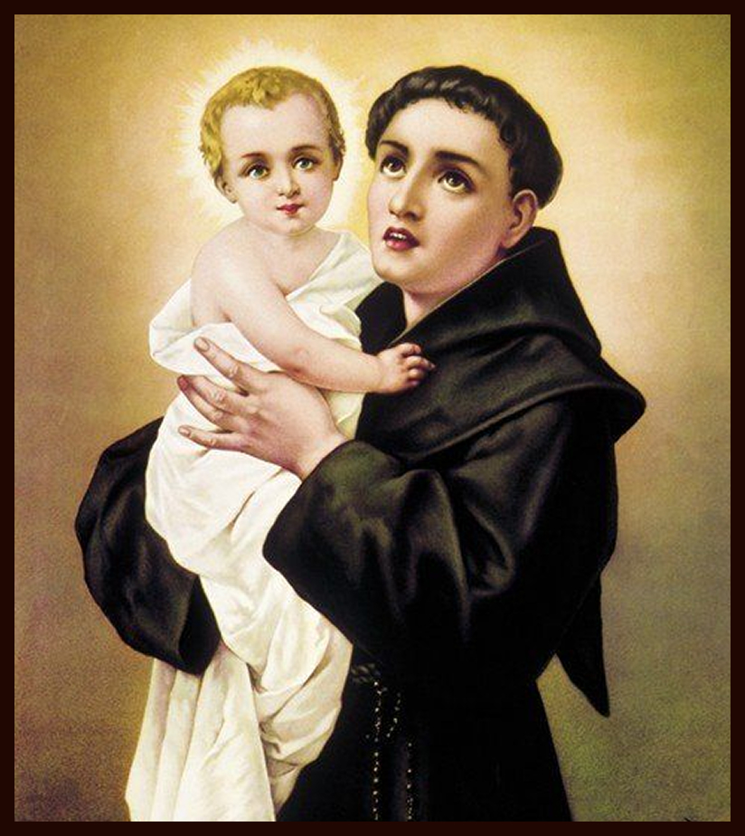
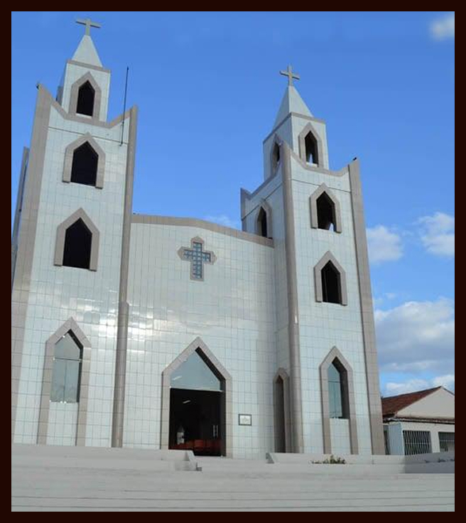

Santo Antônio de Pádua

Infância e vocação
Santo Antônio de Pádua nasceu em Lisboa, Portugal, por volta de 1195, com o nome de Fernando de Bulhões. Aos 15 anos ingressou na Ordem dos Agostinianos, onde dedicou-se profundamente ao estudo da Sagrada Escritura, chegando a decorar grande parte da Bíblia. Comovido pelo martírio de cinco missionários franciscanos no Marrocos, decidiu tornar-se franciscano, adotando o nome Antônio em homenagem a Santo Antão, o grande eremita do deserto. Seu desejo era evangelizar os povos e dar a vida por Cristo, mas uma grave doença o obrigou a retornar à Europa. Durante a viagem, uma tempestade desviou seu navio até a Sicília, na Itália.
O grande pregador
Em 1221, Santo Antônio encontrou-se com São Francisco de Assis no famoso Capítulo das Esteiras. Inicialmente viveu uma vida simples, dedicada à oração e ao silêncio. No ano seguinte, durante uma ordenação sacerdotal, foi convidado inesperadamente para fazer a pregação. Sua profunda sabedoria, conhecimento da Bíblia e eloquência impressionaram todos os presentes. Pouco tempo depois, São Francisco autorizou que ensinasse Teologia e anunciasse o Evangelho oficialmente.Seus sermões reuniam multidões e eram marcados pela defesa dos pobres, pelo chamado à conversão e pela denúncia das injustiças.
Martelo dos Hereges
Santo Antônio destacou-se como um dos maiores pregadores da Igreja. Com grande firmeza e caridade, defendia a fé católica diante dos erros e das heresias de seu tempo. Por esse motivo recebeu o título de "Martelo dos Hereges", tornando-se um dos mais importantes defensores da doutrina cristã durante a Idade Média. Em 1226, foi escolhido como superior dos franciscanos do Norte da Itália, continuando sua missão de evangelizar por diversas cidades.
Os principais milagres e tradições
Diversas tradições populares estão ligadas à vida de Santo Antônio. A mais conhecida é a imagem do santo segurando o Menino Jesus, inspirada em uma visão mística na qual Cristo apareceu em seus braços. Outro famoso milagre é o da mula que adorou o Santíssimo Sacramento. Segundo a tradição, durante um debate sobre a presença real de Jesus na Eucaristia, uma mula faminta ajoelhou-se diante do Santíssimo antes de comer, levando muitas pessoas a fortalecerem sua fé. Também é muito conhecida a pregação aos peixes. Diante da recusa dos homens em ouvir a Palavra de Deus, Santo Antônio dirigiu sua pregação aos peixes, que, segundo a tradição, reuniram-se para escutá-lo, levando muitos hereges à conversão. A devoção do Pão de Santo Antônio nasceu de milagres ligados à caridade e deu origem ao costume de distribuir pão aos pobres em sua memória. Santo Antônio também ficou conhecido como santo casamenteiro, pois costumava ajudar moças pobres oferecendo recursos para que pudessem formar uma família. Por isso, até hoje muitos fiéis recorrem à sua intercessão pedindo um santo matrimônio.
Morte e canonização
Santo Antônio faleceu em 13 de junho de 1231, aos 36 anos, em Arcella, próximo à cidade de Pádua. Sua fama de santidade era tão grande que foi canonizado pelo Papa Gregório IX menos de um ano após sua morte. Em 1946, foi proclamado Doutor da Igreja, título concedido aos grandes mestres da fé cristã. Até os dias de hoje, Santo Antônio permanece como um dos santos mais amados e venerados da Igreja Católica, sendo exemplo de humildade, caridade, profundo conhecimento das Escrituras e amor incondicional a Cristo.
Oração de Santo Antônio
Glorioso Santo Antônio, amigo de Deus e poderoso intercessor, vós que sempre socorrestes aqueles que recorrem à vossa proteção, alcançai-me a graça que tanto necessito (faça aqui o seu pedido), se for para a maior glória de Deus e para o bem da minha alma. Ajudai-me a viver segundo o Evangelho, fortalecendo minha fé, minha esperança e minha caridade. Livrai-me dos perigos espirituais e corporais, conduzi-me pelo caminho da santidade e fazei que eu jamais me afaste de Nosso Senhor Jesus Cristo. Santo Antônio, rogai por nós. Amém.
Oração para encontrar um objeto perdido
Glorioso Santo Antônio, fiel servo de Deus, vós que sois conhecido por ajudar aqueles que perderam algum bem, concedei-me a graça de encontrar aquilo que procuro, se isto for para meu bem e para a glória de Deus. Ajudai-me também a nunca perder o maior de todos os tesouros: a fé em Jesus Cristo. Amém.
Oração para pedir um bom casamento
Santo Antônio, que ajudastes tantos casais a formarem famílias cristãs, alcançai-me de Deus a graça de encontrar uma pessoa virtuosa, com quem eu possa construir um matrimônio santo, baseado no amor, na fidelidade e na vontade de Deus. Que eu saiba esperar com paciência o tempo do Senhor, confiando sempre em Sua providência. Amém.
Frase de Santo Antônio
"A linguagem é viva quando falam as obras. Cessem, portanto, as palavras e falem as obras."
Invocação
Santo Antônio de Pádua, Martelo dos Hereges e Doutor Evangélico, rogai por nós!
Outras Historias:


História da nossa paroquia

A história da Paróquia de Santo Onofre, em Junco do Seridó, na Paraíba, está profundamente entrelaçada com a formação do próprio município. Tudo teve início na Fazenda "Unha de Gato", propriedade do fazendeiro Balduino Guedes, cuja implantação por volta de 1892 marcou o surgimento do povoado. O local, inicialmente conhecido como "Chorão", derivou seu nome da fonte de água doce chamada "Mela Bico", onde a ... Continuar lendo...